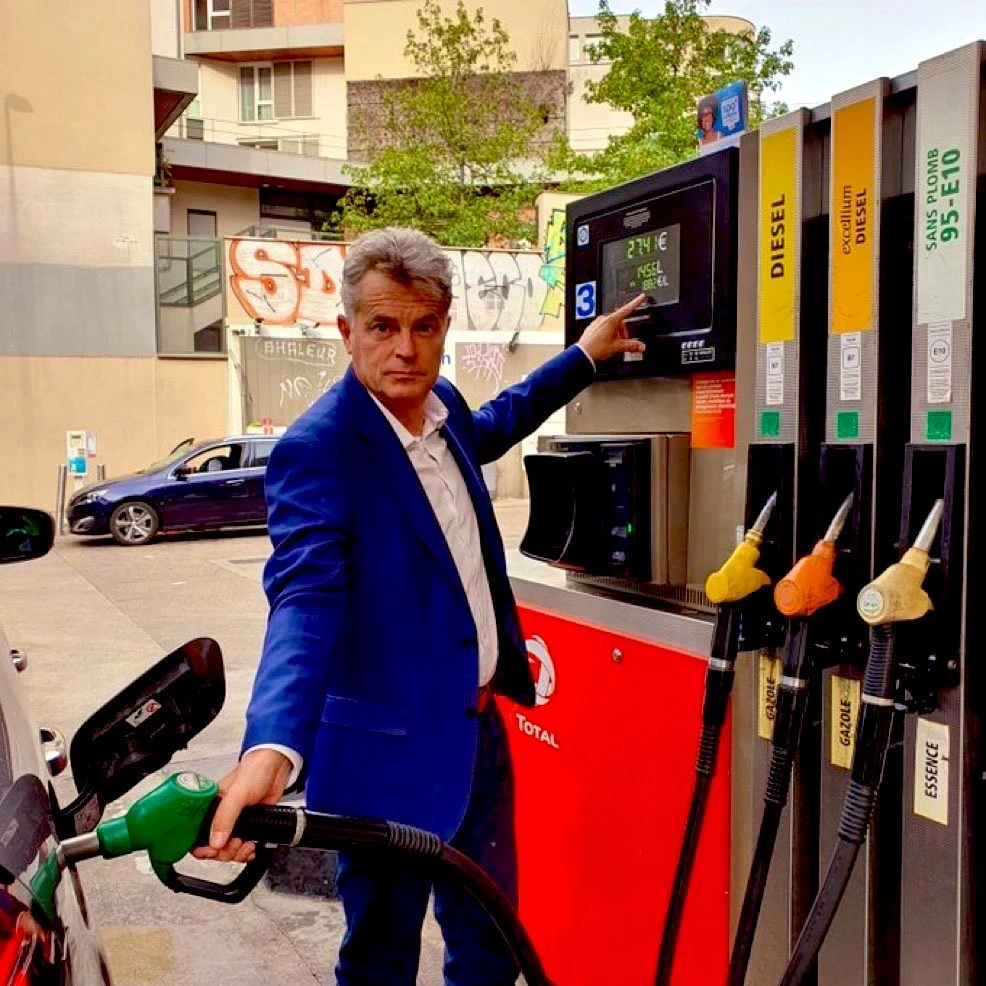

Publication sur X
Du service public de 1946 à la proposition d’un pôle public de l’énergie
Date de publication sur X · 8 avril 2026
Repères éditoriaux
Nous avons rappelé la nationalisation de 1946 et défendu un pôle public réunissant EDF, Engie et Total.
Texte de la publication sur X
Il y a 80 ans, Marcel Paul portait la nationalisation de 1 300 entreprises pour créer EDF-GDF.
Il faut nationaliser Total pour regrouper EDF, ENGIE et Total dans un grand pôle public de l’énergie.
Pour bloquer les prix, baisser la TVA et sortir l’énergie de la logique du profit https://t.co/fPNzRaNZOo

Sources
PCF 79 · @79Parti sur X · AR-0005-TW-2041902117527388574
À lire aussi · Présentation de la proposition de loi sur le service public de l’énergie · Le lien vidéo
Publications associées
- 8 avril 1946. Quatre-vingts ans de service public de l’électricité · Même dossier sur la nationalisation de 1946
- Prix des carburants. Une réaction à l’offre de TotalEnergies · Autre publication utilisant la même photographie